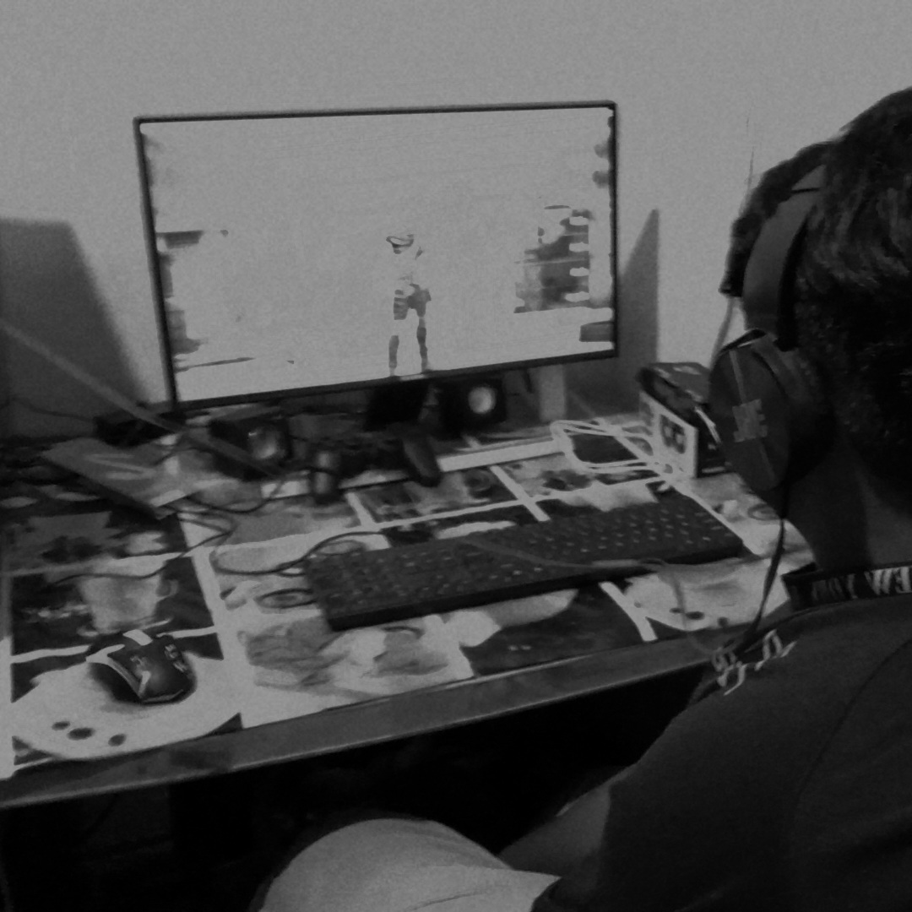

Hi, I'm Raihan Hisny, a passionate tech enthusiast from Sri Lanka. I'm currently exploring the exciting world of web development, practicing HTML, CSS, and building my very own website from scratch. I enjoy learning new tools and bringing ideas to life through code. Whether it's designing something cool, creating digital content, or making my web pages responsive across all devices — I’m always up for the challenge. I’m also a huge car lover. From rare classics to modern supercars, I enjoy everything about them — their looks, features, and how they perform. Cars are not just a hobby for me; they’re a real passion. Outside of coding and cars, I like customizing visuals, working with tools like VS Code, and experimenting with design apps like Canva and GIMP. I believe every detail matters and aim to make my projects stand out both visually and functionally. This page is just the beginning of my journey, and I'm excited to keep learning, creating, and growing in the digital world. Thanks for stopping by!